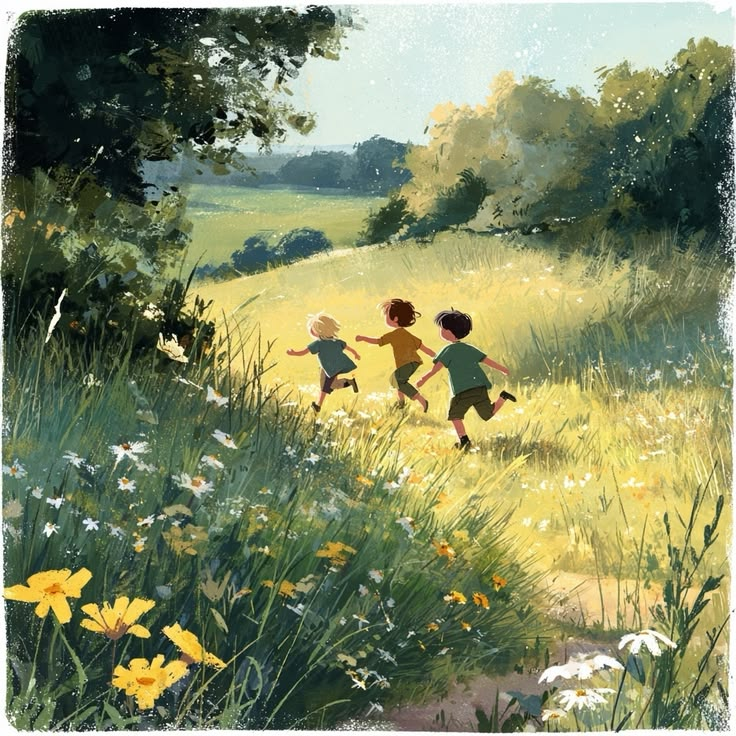

Una tarde, los niños regresaron al bosque y se apoyaron en el árbol, como siempre,
esperando uno de aquellos frutos deliciosos. Pero esta vez, el árbol no respondió. No
quedaba ninguno. Desde su quietud, observó cómo la decepción se dibujaba en los rostros
infantiles. Luego, de pronto, sus expresiones cambiaron y los niños salieron corriendo lejos del bosque.
El gran árbol se llenó de tristeza. Pensó que, sin frutos, ya no querrían volver.
Convencido de que su soledad sería definitiva, decidió cerrar los ojos y sumirse en un
sueño profundo y silencioso.
